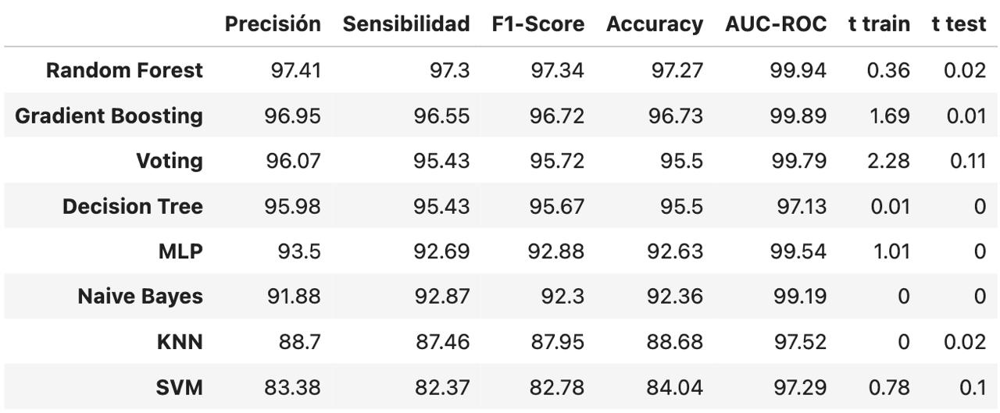

¿Quiénes somos?
Somos The Data Guys, un grupo de entusiastas de los datos dedicados a colaborar con empresas de Retail, ayudándolos a generar valor a su negocio a través del análisis de datos, entre los servicios que aportamos: Estadística descriptiva Segmentación de clientes Análisis predictivos Recomendaciones para la toma de decisiones
Somos una empresa de venta de “En Línea” con presencia en más de 30 países.
Nuestro portafolio de ventas incluye más de 4,000 productos que van desde tarjetas de felicitación hasta muebles y suscripciones de Amazon.
El 30% de nuestros clientes, realizan al menos 1 pedido al mes.
En donde tenemos presencia?
Llegamos a todos los continentes, a más de 30 países, principalmente a Reino Unido, Países Bajos, Irlanda, Alemania, entre otros.
Mapa de Calor de Pedidos alrededor del mundo
Europa es el continente con mayores ventas, en Reino Unido se registra más del 90% de las ventas de la compañía
Nuestras Ventas
Mensualmente tenemos ventas por más de $700,000 euros.

Ventas por región
Las ventas del E-comerce se distribuyen principalmente en estos países, siendo el Reino Unido el lugar de donde se hacen la mayor parte de los pedidos.
El Reino Unido es la región que más ventas registra (con más del 90% de los registros).


Top 5 productos más vendidos en el Reino Unido
El producto más vendido “Regency Cakestand 3 tier”, representa el 1.64% de la venta total del Reino Unido.

¿Cuál es el monto que gasta cada cliente?
En promedio nuestros clientes gastan 300 euros en cada pedido.
Cluster 4: Clientes de alto valor
Características: Muy activos, alta frecuencia, alto valor
Estrategia: Retención y maximización de valor
Acciones: Implementar programa VIP exclusivo Ofrecer acceso anticipado a nuevos productos Proporcionar servicio al cliente dedicado
Cluster 3: Clientes activos de valor medio
Características: Activos, frecuencia media, valor medio
Estrategia: Incremento de valor por compra
Acciones: Crear programa de escalado de compras Ofrecer paquetes de productos para aumentar el valor por transacción Desarrollar contenido educativo sobre productos premium
Cluster 2: Clientes recientes de bajo valor
Características: Recientes, baja frecuencia, bajo valor
Estrategia: Aumento de frecuencia y valor
Acciones: Lanzar campaña de "segunda compra" con incentivos Implementar sistema de recomendaciones personalizadas Introducir programa de fidelización básico
Cluster 1: Clientes de valor medio con baja recencia
Características: Baja recencia, frecuencia media, valor medio
Estrategia: Reactivación personalizada
Acciones: Desarrollar campaña "te extrañamos" con ofertas especiales Enviar recordatorios de productos previamente comprados Realizar encuesta para entender razones de inactividad
Cluster 0: Clientes inactivos de bajo valor
Características: Muy baja recencia, baja frecuencia, bajo valor
Estrategia: Recuperación y reactivación
Acciones: Lanzar campaña de "última oportunidad" con descuentos significativos Implementar programa de reactivación por etapas Evaluar ROI de marketing para este grupo
Desempeño de métricas para modelos de Machine Learning
Podemos observar que el modelo “Random Forest” fue el que tuvo el mejor desempeño superando el 97% de precisión para las predicciones, seguido de él, encontramos como alternativa el Gradient Boosting que nos ofrece métricas similares y tiene ventajas sobre tiempo de procesamiento
Recomendaciones para el negocio
Buscar la expansión de mercado hacia latinoamérica, considerando que ya se tienen embarcaciones que llevan producto tanto a Norteamérica como América del sur, podríamos buscar mercados como México, Chile, Argentina, etc.
Buscar a través de la transformación digital, mejorar las bases de datos para incluir información que sea útil para las métricas del negocio, como la categoría del producto, costos de envío, continentes, etc.
Crear programas para incentivar y fidelizar a nuestros clientes, considerando los tipos de cliente, las costumbres de consumo y la estacionalidad de las ventas.
Incursionar en sistemas de calificación y reseñas de usuarios para implementar análisis de sentimientos y un soporte a cliente , buscando mejorar la satisfacción del cliente y su recomendación.
Implementar estrategias de venta como upselling y cross selling para incentivar las ventas de productos no tan vendidos pero a través del sistema de recomendaciones se concrete la venta.